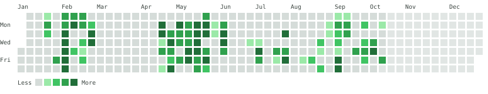
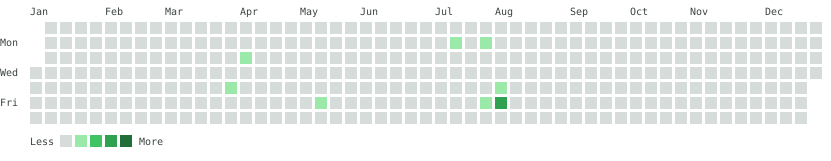

Open-source work, public tools and systems people rely on every day.
Every commit I have made since my first in April 2025, across all branches of all 17 of my repositories, including the private GRA Equipment Operations project.


Counted from each repository's full commit history up to 16 October 2026. Only commits I authored are included; work by other contributors and commits written by AI tools are left out.
The mute LED on HP Laptop 15-dy0xxx machines (Realtek ALC236 codec) never lit because the model had no entry in the sound driver's quirk table. I traced the LED to codec register COEF 0x07, bit 0, using hda-verb, verified it on the hardware, and submitted a one-line fix that reuses an existing driver routine. It was reviewed and applied by Takashi Iwai, the Linux sound subsystem maintainer.
Subject: [PATCH] ALSA: hda/realtek: Enable mute LED on HP Laptop 15-dy0xxx The LED is controlled by COEF index 0x07, bit 0. This was verified on the hardware with hda-verb. Tested on an HP Laptop 15-dy0xxx (SKU 7FU54UA#ABA, board 864F, BIOS F.40). Signed-off-by: Carl Quist Applied now. Takashi Iwai, Linux sound subsystem maintainer
Systems and tools I have built and support as AI Software Engineer at GRA, used by staff and the public.
Attendance and lateness tracking with automated reports, used daily by the Online & Production Unit since May 2026.
Visit LateWatchPublic tax calculators on gra.gov.gh that help taxpayers apply the 2026 rates, bands and reliefs.
Try themNomination and anonymous voting for staff awards, with vote receipts, runoffs and certified results.
Visit O&P AwardsEvent planning for the Communication and Public Affairs department, with role-based access.
Visit the calendarA web system for staff to request equipment and for managers to approve and track requests. In development.
A one-click Wi-Fi hotspot plugin for the Omarchy Linux desktop, originally created by Shivam Narkar. I now maintain it and wrote 62 of its 101 commits, adding device identification and naming, client disconnect and blocking, a hardened privilege boundary, verified installs and Wi-Fi fixes.
View on GitHubThe VAT, PIT and PAYE calculator plugins are public repositories with documented rates, installation steps and versioned releases.
View on GitHubReferences are available on request.
Whether you need a website, an internal system or IT support, I'd like to hear about it.
Get in Touch